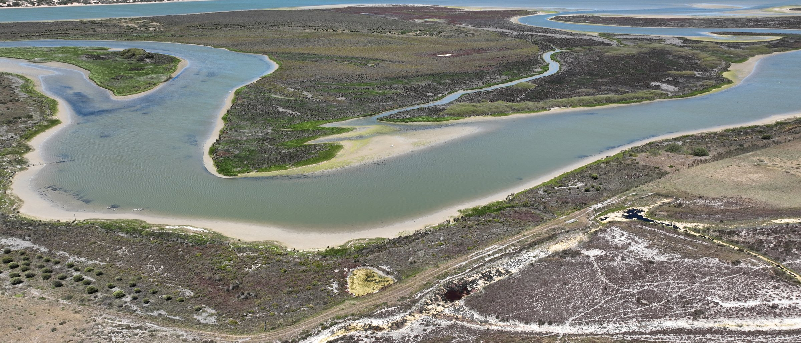
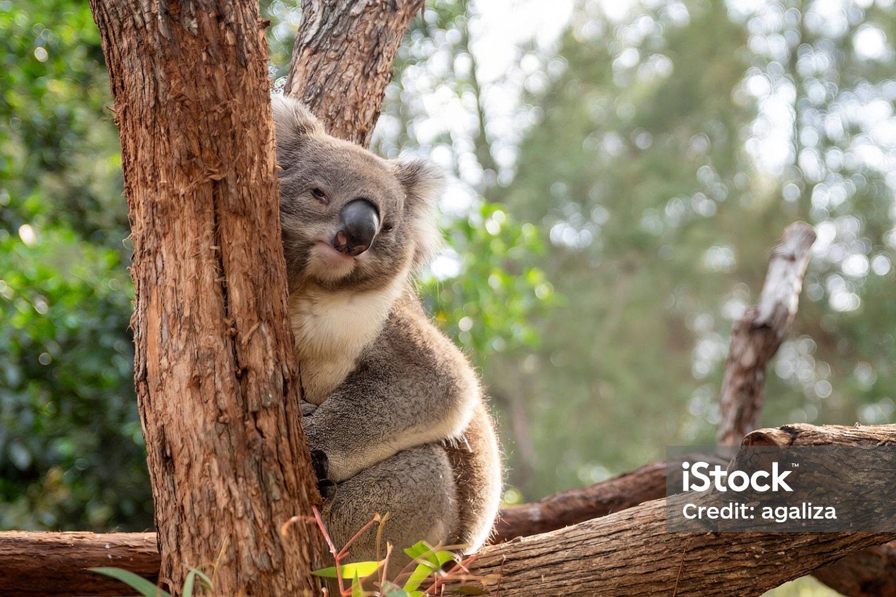

Growing National Parks
VIC
Growing National Parks
VIC
Pillar one · 13 projects
Growing National Parks
We buy high-conservation-value land and hand it back, adding it to Australia's national parks and protected areas so it is safe forever.
29,479Hectares protected
Land bought and transferred into the national parks estate. FNPW Impact Report.
13Projects funded
Land purchases and park expansions funded with partners, supporters and government.
5States and territories
From the Flinders Ranges to the New South Wales coast.
Why it matters
What this pillar does
National parks are the strongest protection Australian law can give a landscape. When land with high conservation value comes up, we help buy it and hand it back, adding it to the protected estate so it is safe from clearing and development forever.
It started with our founding gift in 1970 and it has never stopped: from wetlands at the Murray Mouth to outback stations beside Boodjamulla, these projects are how the map of protected Australia grows.

Featured project
Remarkable Southern Flinders
Linking established parks, newly protected land and open reservoir country into one vast, connected park precinct for South Australia, co-managed with the Nukunu Nation.
It is the largest single project in the pillar and the clearest picture of what growing a national park actually takes: patient negotiation, co-funding, and Traditional Owners at the centre of how the land is managed afterwards.
Read the full storyAll 13 projects
Projects under this pillar
Showing all 13 projects
Growing National Parks
VIC
 Growing National Parks
SA
Growing National Parks
SA
Enhancing Biodiversity & Protecting Cultural Heritage at Torrens Island
 Growing National Parks
NSW
Growing National Parks
NSW
Gogerlys Point Heritage Precinct
 Growing National Parks
NSW
Growing National Parks
NSW
Heritage Estates
 Growing National Parks
NSW
Growing National Parks
NSW
Kukundi Nature Playspace
 Growing National Parks
TAS
Growing National Parks
TAS
Mount Field National Park
 Growing National Parks
SA
Growing National Parks
SA
Mt Schank Walking Trail

Growing National Parks SAMundoo Island Station
 Growing National Parks
SA
Growing National Parks
SA
Nilpena National Park
Growing National Parks
SA
Remarkable Southern Flinders
 Growing National Parks
NSW
Growing National Parks
NSW
Sturt National Park
 Growing National Parks
QLD
Growing National Parks
QLD
Trails for Tails
 Growing National Parks
NSW
Growing National Parks
NSW
Woomargama National Park
Related reading
All articles
Stories from the parks we’re growing
Growing Parks08 May 2026 · Story
Mundoo Island: a once-in-a-generation conservation victory
From the Murray Mouth, 1,900 hectares of Ramsar wetlands have been secured for Coorong National Park, with the Ngarrindjeri at the heart of decision-making.
Read more Growing Parks
Growing ParksJul 2026 · Story
A wildlife corridor is only as wide as its narrowest point
Development keeps narrowing the routes wildlife depend on, and it is the tightest pinch point that decides whether a corridor works at all.
Read more Growing Parks
Growing ParksJun 2026 · Story
Years of restoration, written in layers
Hindmarsh Valley has gone from cleared paddock to returning forest, and the layers of that recovery are now readable on the ground.
Read more
Keep exploring
Pillar 02
 Pillar 03
Pillar 03
The other pillars

Saving Species
We protect Australia’s most vulnerable species by restoring habitats, creating corridors and funding targeted recovery work.
See the projectsHealing the Land
We restore landscapes affected by bushfire, flood and clearing, returning them to health for the species that depend on them.
See the projectsSupport Growing National Parks.
Donate to this pillar directly, or explore the other ways to get involved.